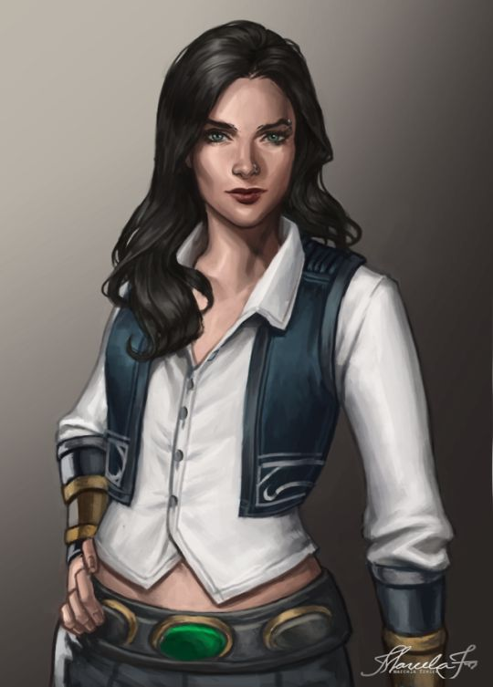

Cassandra az apjától örökölte a céget. Az apja megtanította a hajók javítására, fejlesztésére és az üzleti érzékét is megörökölte.
Apja tragikus halála után az műhely Cassandrára hárult, sokan megkérdőjelezték hogy alkalmas-e egy 17 éves lány egy műhely irányítására, viszont a következő 5 év alatt megmutatta hogy mennyire tehetséges.
A műhelyből egy kissebb kereskedelem alakult majd 3évvel később megvett egy aszteroida bányát, amit átalakított és az árúházunk fő központja lett.
Azóta jó üzleti érzésével és karizmatikus alkatával egy egyszerű műhelyből egy intergalaktikus hajókereskedéssé formálta a céget.
A cégünk büszke egy ilyen vezetőre hiszen a Galaxy holomagazinban az év legsikeresebb üzleteként szerepelünk.